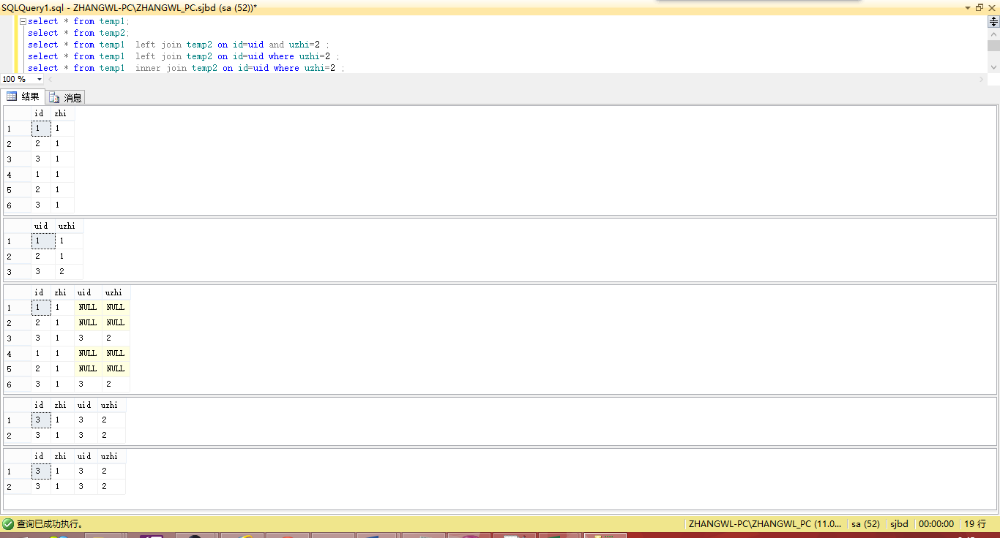

- left join左結合（LEFT JOIN）。左テーブルのすべてのレコードと、右テーブルの結合フィールドが等しいレコードを返します。
- right join右結合（RIGHT JOIN）。右テーブルのすべてのレコードと、左テーブルの結合フィールドが等しいレコードを返します。
- inner join内部結合（INNER JOIN）。等値結合とも呼ばれ、2つのテーブルで結合フィールドが等しい行のみを返します。
- full join: 外部結合。2つのテーブルの行を返す：left join + right join。
- cross join結果はデカルト積、つまり最初のテーブルの行数に2番目のテーブルの行数を掛けたものです。
キーワード on
データベースは2つ以上のテーブルを結合してレコードを返す際、常に中間の一時テーブルを生成し、その一時テーブルをユーザーに返します。
使用時にleft join时，onとwhere条件の違いは以下の通りです：
- 1、 on条件は一時テーブルを生成する際に使用される条件であり、それはon内の条件が真であるかどうかに関係なく、左テーブルのレコードを返します。
- 2、where条件は一時テーブルが生成された後に、一時テーブルに対してフィルタリングを行う条件です。この時点ではもはやleft joinの意味（左テーブルのレコードを返さなければならない）はなくなり、条件が真でないものはすべてフィルタリングされます。
2つのテーブルがあると仮定します：
表1：tab1
| id | size |
| 1 | 10 |
| 2 | 20 |
| 3 | 30 |
表2：tab2
| size | name |
| 10 | AAA |
| 20 | BBB |
| 20 | CCC |
两条 SQL:
select * from tab1 left join tab2 on (tab1.size = tab2.size) where tab2.name='AAA' select * from tab1 left join tab2 on (tab1.size = tab2.size and tab2.name='AAA')
| 最初のSQLのプロセス：
|
| 2番目のSQLのプロセス：
|
実は上記の結果の重要な原因はleft join、right join、full joinの特殊性により、〜を問わずonの上の条件が真かどうかに関係なく返すleft 或 rightテーブル内のレコードは、full则具有leftとrightの特性の和集合である。 そしてinner jionこの特殊性がない場合、条件は置かれるon中和whereでは、返される結果セットは同じである。
原文地址：https://www.cnblogs.com/wlzhang/p/4532587.html